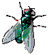
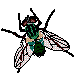
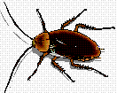
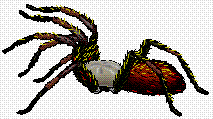

Criações de Invertebrados
O paraíso dos entomologistas
Este é um novo departamento na nossa loja. Alguns não vão gostar dele, mas,
como nosso objetivo é vender qualquer coisa, ele foi instalado. Por enquanto só
temos três produtos, mas você já pode fazer encomendas!
-
Fazenda das "Mutucas"
As melhores raças de moscas azuis graúdas. Ideal para criações
em regiões abertas, longe dos centros urbanos.
R$120,00
- Cucarachas gordas
Criação exclusiva de baratas alimentadas com ração importada.
Ideal para apartamentos. Temos também aquario especial para
hospedar a colônia e mobile de 45 espécies de todo o planeta.
R$314,00
- Tarântulas

Enormes, peludas e sadias. Não inclui aquario. Acessórios como coleira, etc.
são vendidos separadamente.
R$5,00 cada.
Voltar | Dinossauros | Livros | Invertebrados | Outros | Carrinho de Compras